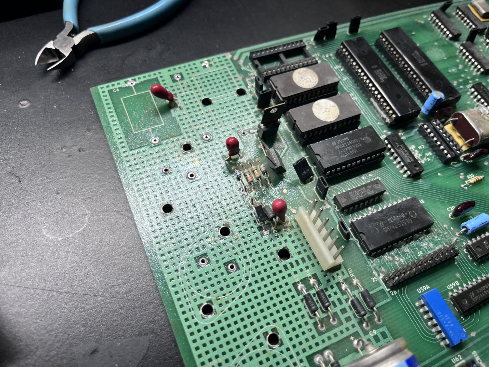
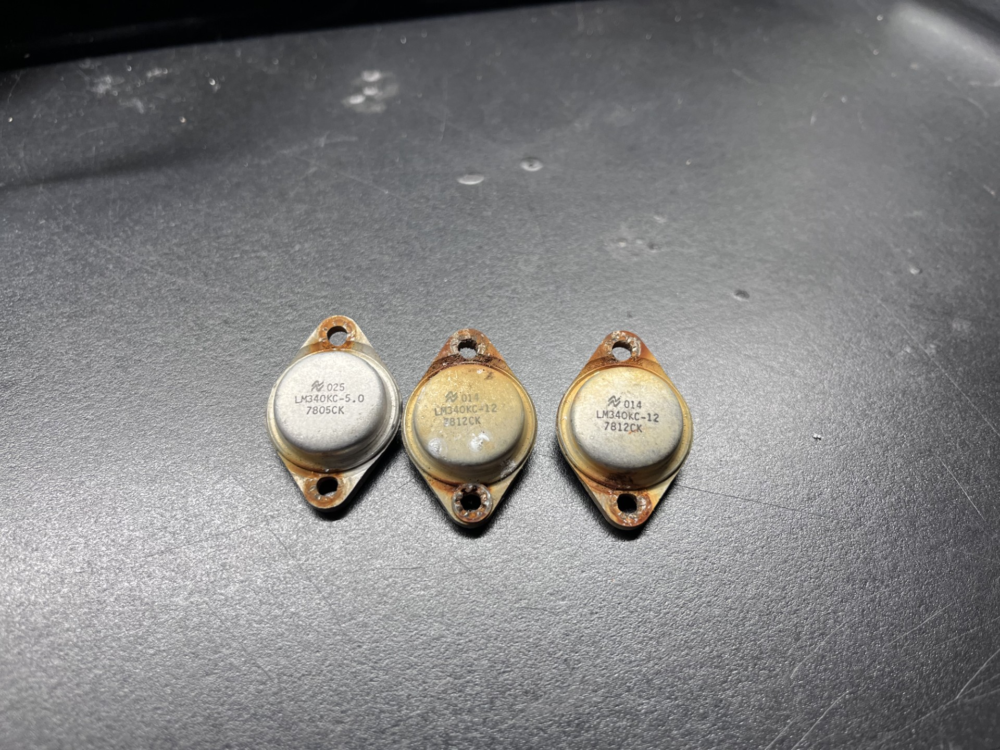
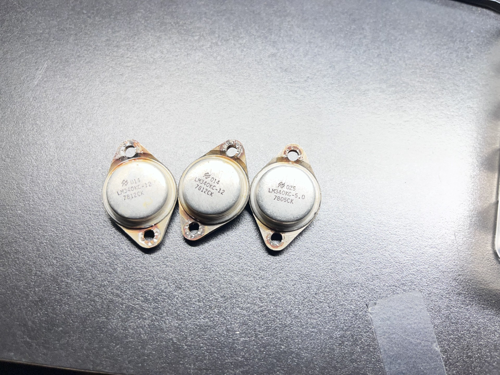
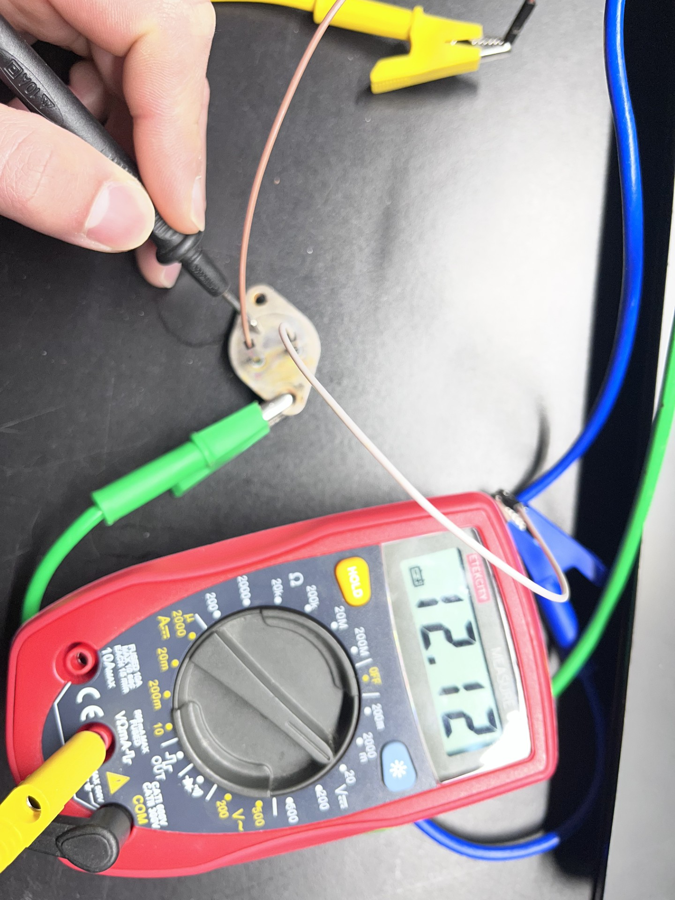
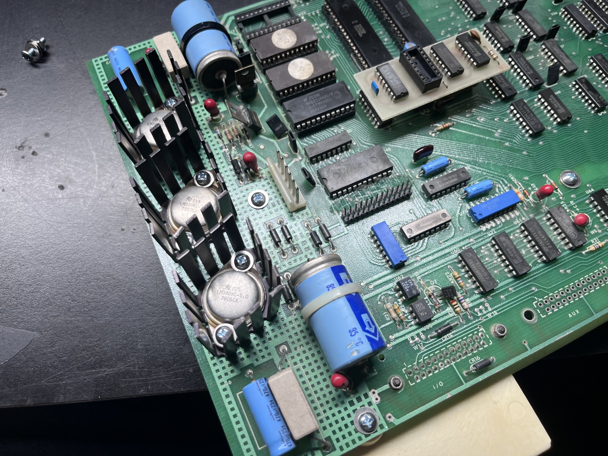
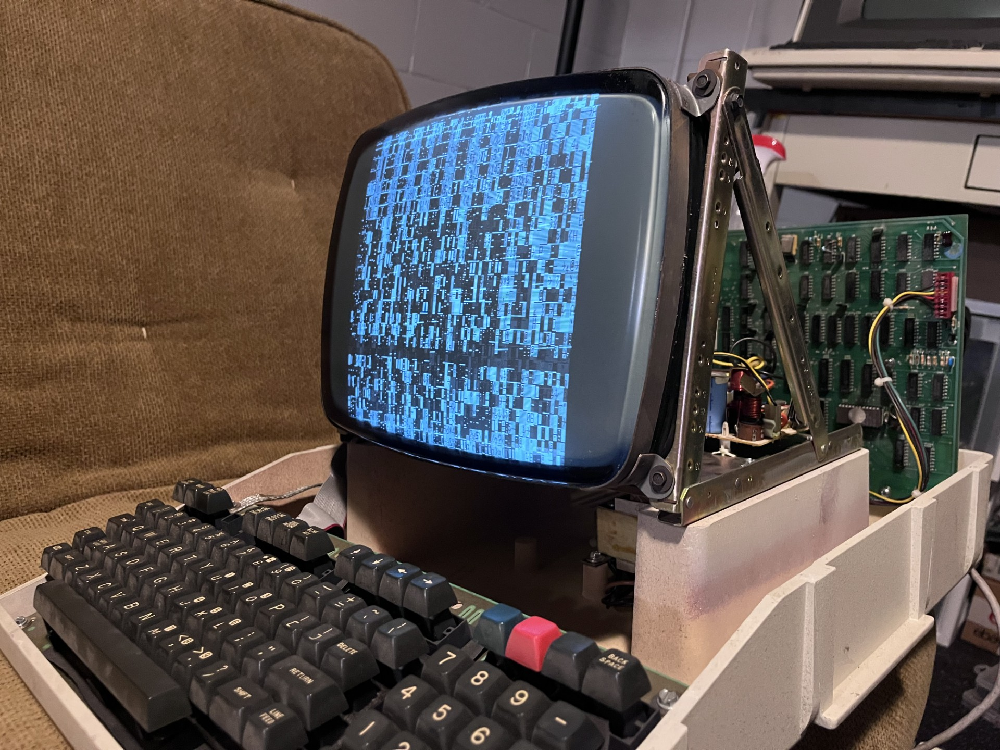
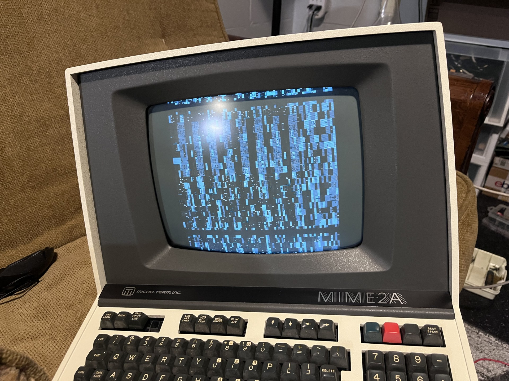

.... .. . s s s
+^""888h. ~"888h @88> :8 :8 :8
8X. ?8888X 8888f %8P u. u. .88 .88 u. u. u. .88
'888x 8888X 8888~ . u x@88k u@88c. .u :888ooo :888ooo ...ue888b x@88k u@88c. .u :888ooo
'88888 8888X "88x: .@88u us888u. ^"8888""8888" ud8888. -*8888888 -*8888888 888R Y888r ^"8888""8888" ud8888. -*8888888
`8888 8888X X88x. ''888E` .@88 "8888" 8888 888R :888'8888. 8888 8888 888R I888> 8888 888R :888'8888. 8888
`*` 8888X '88888X 888E 9888 9888 8888 888R d888 '88%" 8888 8888 888R I888> 8888 888R d888 '88%" 8888
~`...8888X "88888 888E 9888 9888 8888 888R 8888.+" 8888 8888 888R I888> 8888 888R 8888.+" 8888
x8888888X. `%8" 888E 9888 9888 8888 888R 8888L .8888Lu= .8888Lu= u8888cJ888 . 8888 888R 8888L .8888Lu=
'%"*8888888h. " 888& 9888 9888 "*88*" 8888" '8888c. .+ ^%888* ^%888* "*888*P" .@8c "*88*" 8888" '8888c. .+ ^%888*
~ 888888888!` R888" "888*""888" "" 'Y" "88888% 'Y" 'Y" 'Y" '%888" "" 'Y" "88888% 'Y"
X888^""" "" ^Y" ^Y' "YP' ^* "YP'
`88f
88
[05/30/2026]
Now to the fun stuff :)
This post I WILL be turning the terminal on (finally!!!!). I decided to start with clearing the PCB and getting it prepped for testing. After I had removed the voltage regulators, I also removed the surrounding capacitors and resistor to clear off the rust that had settled in the area. Here is what the board looked like after I had cleared everything:

The rust was caked in pretty well, but with a little elbow grease I was able to get it removed (mostly). The next step was sourcing new LM340KC-12V and LM340KC-5.0V voltage regulators... but wait I am a broke college student and am trying to save money anywhere I can. These regulators are nearly $10 (each!), so I thought I would try to reuse the rusted voltage regulators. Turns out, they were very much recoverable and ended up working! Here is a before and after of the voltage regulators.
Before:

After:

I decided to test them using my benchtop powersupply. If you ever have one of these regulators, flipping them over you would see an "E" representing "Emitter" (the output) and the "B" representing "Base" (the input). The return voltage is the casing itself. If you ever reference the original datasheet, the labeling the manufacturer uses here is derived from the simplified voltage reference schematic, but it seems to contradict this fact as Vin = Collector and Vout = Emitter. I'm probably just misunderstanding this :/
Anyways here is the 12V regulator being tested. They all worked just fine, which surpised me given the condition they were in.

The PCB cleaned up very well, I threw out the old rusty screws and went to the hardware store and got some replacements. Here is the affected area all cleaned up:

Once that was finished, I decided it was time to turn the terminal on for the first time. I plugged all the cables into their respetive connectors and... nothing. I was a little worried since I could have potentially fried something if my transnformer inside had gone bad somehow, but using my multimeter I was getting a steady 12V and 5V, so it couldn't be that.
I then noticed that the CRT filament was not on. I remembered that the connectors were somewhat corroded, so I reseated the connectors driving the analog video board a few times to loosen any corrosion and make solid contact ( I really should remove this and clean it, but since I had everything already assembled I thought this would suffice in the meantime). And it turns on!

I noticed the vertical hold was not in sync, and usually monitors have adjustments in the rear or front for these kinds of adjustments. This particular CRT chasis did not unfortunately, and looking at the analog driver board it did not seem to have any potentiometers for such adjustments.

The garbled screen indicates some logic problems with the mainboard, and I will look into that another day. But I did turn some electronics on finally, so that is at least progress. I did already do a once over with contact cleaner for all the IC's that were socketed, but these are not the nicer dual-wipe sockets and are the cheaper and unreliable single-wipe DIP sockets, so maybe I'll have to put my surplus of DIP sockets to good use. Anyways, the next part I will try to tackle the CRT video issues first, and possibly the mainboard logic problems as well.